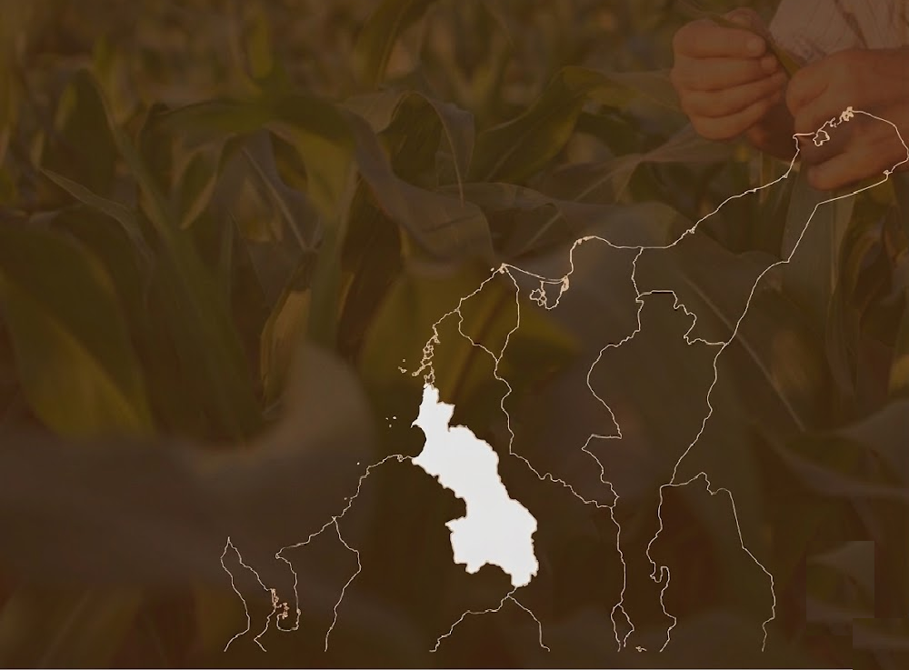

Empresas unidas por la sostenibilidad, el valor agregado y el orgullo del Caribe colombiano. Del campo a la mesa, con calidad, identidad y trazabilidad.

Raíz Caribe nace como una alianza de empresarios, productores y emprendedores comprometidos con la innovación agroindustrial, la sostenibilidad y el fortalecimiento del tejido productivo.
Desde el corazón del departamento de Sucre, Raíz Caribe reúne 22 miembros que impulsan el crecimiento económico, la seguridad alimentaria y la generación de oportunidades para las comunidades del territorio.
Promover la producción y elaboración de alimentos agrícolas y agroindustriales sostenibles e innovadores mediante prácticas responsables, servicios especializados y fortalecimiento empresarial.
Ser un referente internacional en producción sostenible e innovación agroindustrial, impulsando el desarrollo económico, social y ambiental.
Apoyar el crecimiento de emprendimientos agroindustriales.
Impulsar prácticas responsables y amigables con el ambiente.
Conectar a nuestros miembros con nuevos mercados.
Convertirnos en un referente agroindustrial exportador.
Transformación y comercialización de productos agrícolas.
Capacitación y acompañamiento empresarial.
Buenas prácticas ambientales y sociales.
Desarrollo de soluciones para el sector agroalimentario.